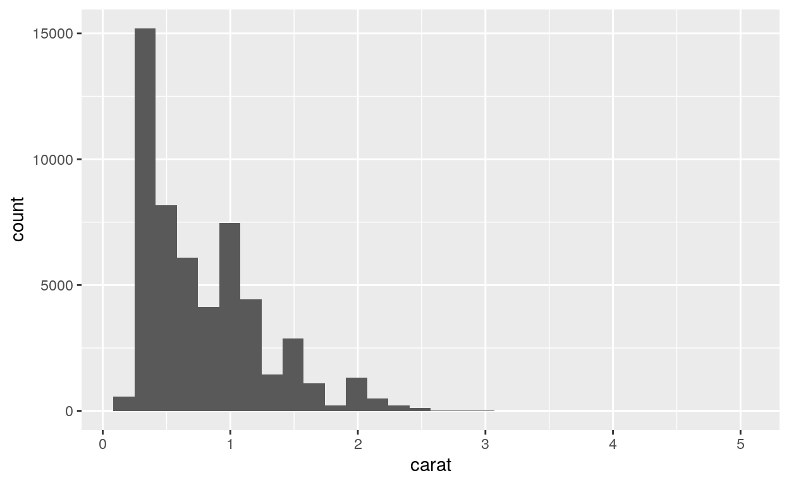
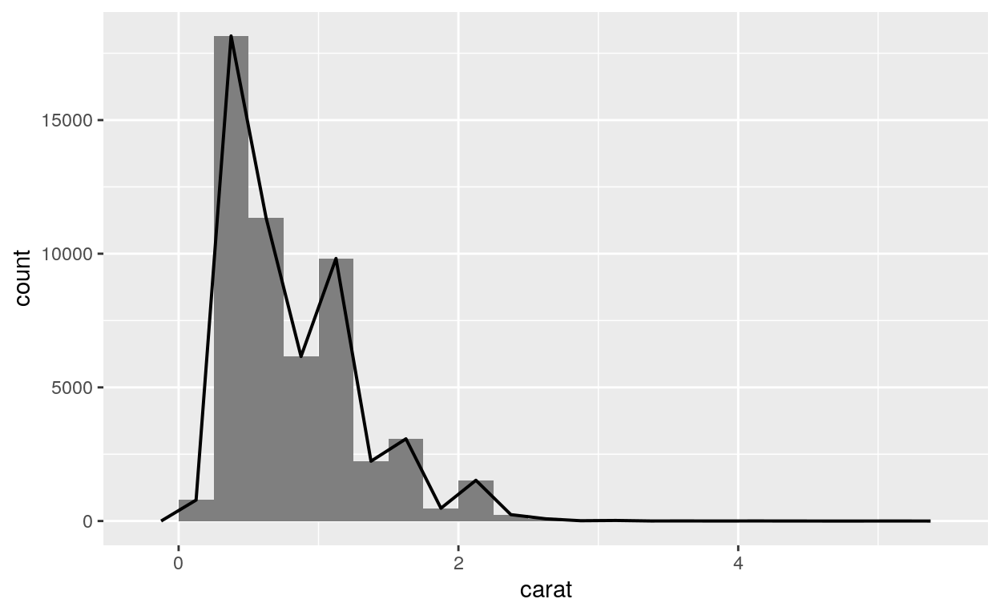
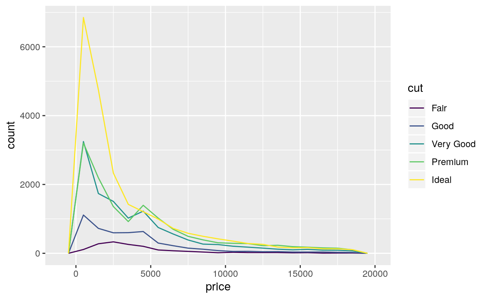
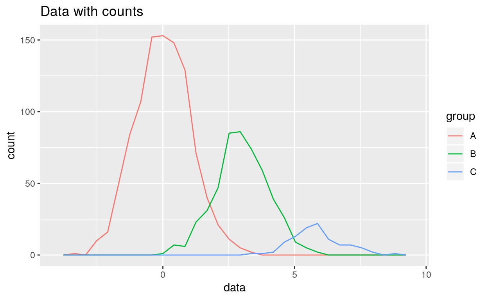
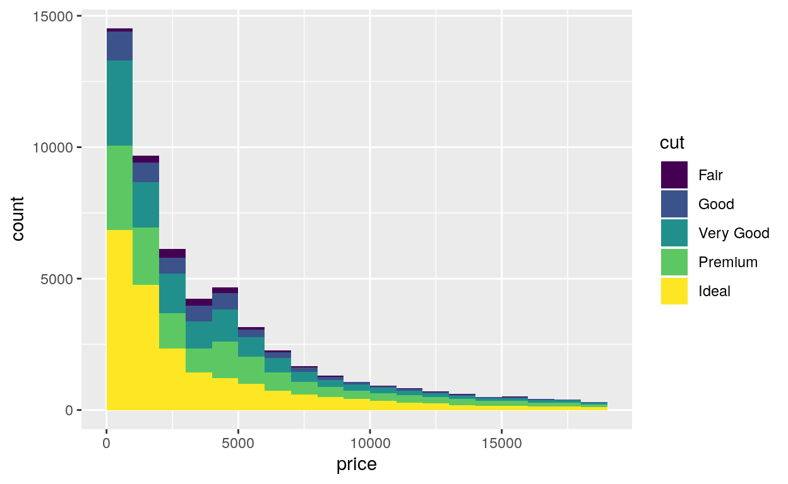

Welcome
Histograms are the most popular way to visualize continuous distributions. Here we will look at them and their derivatives. You will learn how to:
- Make and interpret histograms
- Adjust the binwidth of a histogram to reveal new information
- Use geoms that are similar to histograms, such as dotplots, frequency polygons, and densities
The tutorial is adapted from R for Data Science by Hadley Wickham and Garrett Grolemund, published by O’Reilly Media, Inc., 2016, ISBN: 9781491910399. You can purchase the book at shop.oreilly.com.
The tutorial uses the ggplot2 and dplyr packages, which have been pre-loaded for your convenience.
Histograms
Introduction
How to make a histogram
To make a histogram with ggplot2, add geom_histogram() to the ggplot2 template. For example, the code below plots a histogram of the carat variable in the diamonds dataset, which comes with ggplot2.
ggplot(data = diamonds) +
geom_histogram(mapping = aes(x = carat))The y variable
As with geom_bar(), you do not need to give geom_histogram() a \(y\) variable. geom_histogram() will construct its own \(y\) variable by counting the number of observations that fall into each bin on the \(x\) axis. geom_histogram() will then map the counts to the \(y\) axis.

As a result, you can glance at a bar to determine how many observations fall within a bin. Bins with tall bars highlight common values of the \(x\) variable.
Exercise 1 - Interpretation

binwidth
By default, ggplot2 will choose a binwidth for your histogram that results in about 30 bins. You can set the binwidth manually with the binwidth argument, which is interpreted in the units of the x axis:
ggplot(data = diamonds) +
geom_histogram(mapping = aes(x = carat), binwidth = 1)bins
Alternatively, you can set the binwidth with the bins argument which takes the total number of bins to use:
ggplot(data = diamonds) +
geom_histogram(mapping = aes(x = carat), bins = 10)It can be hard to determine what the actual binwidths are when you use bins, since they may not be round numbers.
boundary
You can move the bins left and right along the \(x\) axis with the boundary argument. boundary takes an \(x\) value to use as the boundary between two bins (ggplot2 will align the rest of the bins accordingly):
ggplot(data = diamonds) +
geom_histogram(mapping = aes(x = carat), bins = 10, boundary = 0)Exercise 2 - binwidth
When you use geom_histogram(), you should always experiment with different binwidths because different size bins reveal different types of information.
To see an example of this, make a histogram of the carat variable in the diamonds dataset. Use a bin size of 0.5 carats. What does the overall shape of the distribution look like?
"Good job! The most common diamond size is about 0.5 carats. Larger sizes become progressively less frequent as carat size increases. This accords with general knowledge about diamonds, so you may be prompted to stop exploring the distribution of carat size. But should you?"ggplot(data = diamonds) +
geom_histogram(mapping = aes(x = carat), binwidth = 0.5)Exercise 3 - another binwidth
Recreate your histogram of carat but this time use a binwidth of 0.1. Does your plot reveal new information? Look closely. Is there more than one peak? Where do the peaks occur?
"Good job! The new binwidth reveals a new phenomena: carat sizes like 0.5, 0.75, 1, 1.5, and 2 are much more common than carat sizes that do not fall near a common fraction. Why might this be?"ggplot(data = diamonds) +
geom_histogram(mapping = aes(x = carat), binwidth = 0.1)Exercise 4 - another binwidth
Recreate your histogram of carat a final time, but this time use a binwidth of 0.01 and set the first boundary to zero. Try to find one new pattern in the results.
"Good job! The new binwidth reveals another phenomena: each peak is very right skewed. In other words, diamonds that are 1.01 carats are much more common than diamonds that are .99 carats. Why would that be?"ggplot(data = diamonds) +
geom_histogram(mapping = aes(x = carat), binwidth = 0.01, boundary = 0)aesthetics
Visually, histograms are very similar to bar charts. As a result, they use the same aesthetics: alpha, color, fill, linetype, and size.
They also behave in the same odd way when you use the color aesthetic. Do you remember what happens?
Exercise 5 - Putting it all together
Recreate the histogram below.

"Good job! Did you ensure that each binwidth is 1000 and that the first boundary is zero?"ggplot(data = diamonds) +
geom_histogram(mapping = aes(x = price, fill = cut), binwidth = 1000, boundary = 0)Similar geoms
A problem
By adding a fill color to our histogram below, we’ve divided the data into five “sub-distributions”: the distribution of price for Fair cut diamonds, for Good cut diamonds, for Very Good cut diamonds, for Premium cut diamonds, and for Ideal cut diamonds.

But this display has some shortcomings:
- it is difficult to see the “shapes” of the individual distributions
- it is difficult to compare the individual distributions, because they do not share a common baseline value for \(y\).
A solution
We can improve the plot by using a different geom to display the distributions of price values. ggplot2 includes three geoms that display the same information as a histogram, but in different ways:
geom_freqpoly()geom_density()geom_dotplot()
geom_freqpoly()
geom_freqpoly() plots a frequency polygon, which uses a line to display the same information as a histogram. You can think of a frequency polygon as a line that would connect the top of each bar that appears in a histogram, like this:

Note that the bars are not part of the frequency polygon; they are just there for reference. geom_freqpoly() recognizes the same parameters as geom_histogram(), such as bins, binwidth, and boundary.
Exercise 6 - Frequency polygons
Create the frequency polygon depicted above. It has a binwidth of 0.25 and starts at the boundary zero.
"Good job! By using a line instead of bars, frequency polygons can sometimes do things that histograms cannot."ggplot(data = diamonds) +
geom_freqpoly(mapping = aes(x = carat), binwidth = 0.25, boundary = 0)Exercise 7 - Multiple frequency polygons
Use a frequency polygon to recreate our chart of price and cut. Since lines do not have “substance” like bars, you will want to use the color aesthetic instead of the fill aesthetic.

"Good job! Since lines do not occlude each other, `geom_freqpoly()` plots each sub-group against the same baseline: y = 0 (i.e. it unstacks the sub-groups). This makes it easier to compare the distributions. You can now see that for almost every price value, there are more Ideal cut diamonds than there are other types of diamonds."ggplot(data = diamonds) +
geom_freqpoly(mapping = aes(x = price, color = cut), binwidth = 1000, boundary = 0)geom_density()
Our frequency polygon highlights a second shortcoming with our graph: it is difficult to compare the shapes of the distributions because some sub-groups contain more diamonds than others. This compresses smaller subgroups into the bottom of the graph.

You can avoid this with geom_density().
Density curves
geom_density() plots a kernel density estimate (i.e. a density curve) for each distribution. This is a smoothed representation of the data, analogous to a smoothed histogram.
Density curves do not plot count on the \(y\) axis but density, which is analagous to the count divided by the total number of observations. Densities makes it easy to compare the distributions of sub-groups. When you plot multiple sub-groups, each density curve will contain the same area under its curve.

Exercise 8 - Density curves
Re-draw our plot with density curves. How do you interpret the results?

"Good job! You can now compare the most common prices for each sub-group. For example, the plot shows that the most common price for most diamonds is near $1000. However, the most common price for Fair cut diamonds is significantly higher, about $2500. We will come back to this oddity in a later tutorial."ggplot(data = diamonds) +
geom_density(mapping = aes(x = price, color = cut))Density parameters
Density plots do not take bin, binwidth, and boundary parameters. Instead they recognize kernel and smoothing parameters that are used in the density fitting algorithm, which is fairly sophisticated.
In practice, you can obtain useful results quickly with the default parameters of geom_density(). If you’d like to learn more about density estimates and their tuning parameters, begin with the help page at ?geom_density().
geom_dotplot()
ggplot2 provides a final geom for displaying one dimensional distributions: geom_dotplot(). geom_dotplot() represents each observation with a dot and then stacks dots within bins to create the semblance of a histogram.
Dotplots can provide an intuitive display of the data, but they have several shortcomings. Dotplots are not ideal for large data sets like diamonds, and provide meaningless \(y\) axis labels. I also find that the tuning parameters of geom_dotplot() make dotplots too slow to work with for EDA.
ggplot(data = mpg) +
geom_dotplot(mapping = aes(x = displ), dotsize = 0.5, stackdir = "up", stackratio = 1.1)Exercise 9 - Facets
Instead of changing geoms, you can make the sub-groups in our original plot easier to compare by facetting the data. Extend the code below to facet by cut.
ggplot(data = diamonds) +
geom_histogram(mapping = aes(x = price, fill = cut), binwidth = 1000, boundary = 0)"Good job! Facets make it easier to compare sub-groups, but at the expense of separating the data. You may decide that frequency polygons and densities allow more direct comparisons."ggplot(data = diamonds) +
geom_histogram(mapping = aes(x = price, fill = cut), binwidth = 1000, boundary = 0) +
facet_wrap( ~cut)Recap
In this tutorial, you learned how to visualize distributions with histograms, frequency polygons, and densities. But what should you look for in these visualizations?
Look for places with lots of data. Tall bars reveal the most common values in your data; you can expect these values to be the “typical values” for your variable.
Look for places with little data. Short bars reveal uncommon values. These values appear rarely and you might be able to figure out why.
Look for outliers. Bars that appear away from the bulk of the data are outliers, special cases that may reveal unexpected insights.
Sometimes outliers cannot be seen in a plot, but can be inferred from the range of the \(x\) axis. For example, many of the plots in this tutorial seemed to extend well past the end of the data. Why? Because the range was stretched to include outliers. When your data set is large, like
diamonds, the bar that describes an outlier may be invisible (i.e. less than one pixel high).Look for clusters.
Look for shape. The shape of a histogram can often indicate whether or not a variable behaves according to a known probability distribution.
The most important thing to remember about histograms, frequency polygons, and dotplots is to explore different binwidths. The binwidth of a histogram determines what information the histogram displays. You cannot predict ahead of time which binwidth will reveal unexpected information.